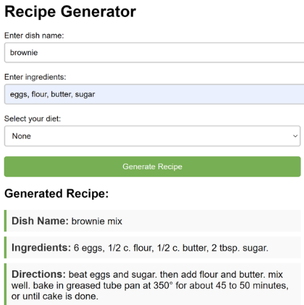

Recipe Generator

In life, have you ever been in a dilemma where you have too many immediate ingredients on hand and want to get rid of them as soon as possible, but don’t know how to deal with them?
With generative recipes, you can easily solve this problem and create delicious meals! In addition, you can remove or add ingredients to change the flavor according to your personal preference.